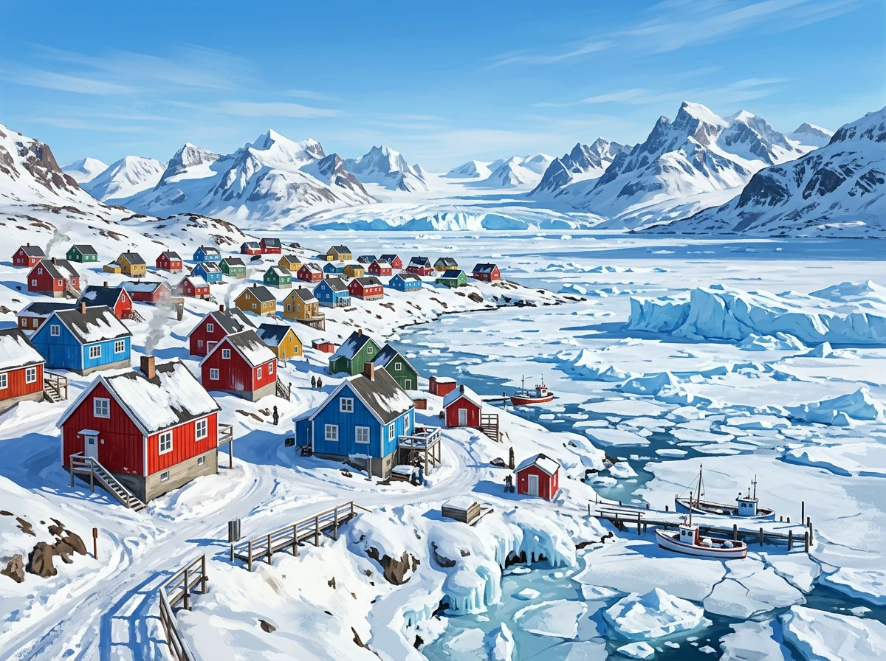

استوديو القراءة والقصص التفاعلية (3 Interactive Readings)
اختر نص القراءة المطلوب لتصفحه في الكتاب التفاعلي ثلاثي الأبعاد مع المشاهد المصورة والقارئ الصوتي التلقائي 🎧
🖼️ Scene 1 of 3

Brightly colored wooden houses of Ittoqqortoormiit, Greenland by the frozen sea ice
📖 Book ReaderPage 1 / 3
Ittoqqortoormiit, Greenland
In 1925, a group of Inuit people arrived in a part of Greenland, now called Ittoqqortoormiit. It is far away from other places in Greenland. Since that time, people have been living here in the traditional way, hunting animals for food on land and in the sea. The town's brightly colored wooden houses have been homes for generations of families. Nowadays, around 400 people live here and it's a very close and friendly community. There is just one small supermarket, one restaurant, a school, and a museum. For nine months of the year, the sea around Ittoqqortoormiit freezes, so boats cannot travel here. The sea ice is very important for hunting.
💡 الترجمة:
في عام 1925، وصلت مجموعة من شعب الإنويت (الإسكيمو) إلى جزء من غرينلاند يُدعى الآن إيتوكورتورميت. وهي بعيدة تماماً عن الأماكن الأخرى في غرينلاند. ومنذ ذلك الوقت، يعيش الناس هنا بالطريقة التقليدية، حيث يصطادون الحيوانات للحصول على الطعام في البر والبحر. كانت المنازل الخشبية ذات الألوان الزاهية في المدينة موطناً لأجيال من العائلات. يعيش هنا اليوم حوالي 400 شخص وهو مجتمع مترابط وودود للغاية. يوجد به متجر صغير واحد فقط، ومطعم واحد، ومدرسة، ومتحف. ولمدة تسعة أشهر في السنة، يتجمد البحر حول إيتوكورتورميت فلا تستطيع القوارب السفر إليها، ويعد جليد البحر مهماً جداً للصيد.
Inuit people (شعب الإنويت)traditional way (طريقة تقليدية)hunting animals (صيد الحيوانات)wooden houses (منازل خشبية)sea ice (جليد البحر)
Scene 1 of 3
🗣️
محادثة الدرس التفاعلية (Interactive Dialogue)
Exploring Remote Communities & Ancestral Roots
تدريب محادثة تفاعلي ناطق بصوت واضح لكل جملة
حوار تعليمي شيق بين مستر أحمد (Mr. Ahmed) والطالب عمر (Omar) حول المجتمعات المنعزلة وتاريخ العائلات:
👨🏫 Mr. Ahmed Assem:
"Welcome back, Omar! Have you ever wondered what life is like in communities that are a long way from anywhere?"
(أهلاً بك يا عمر! هل تساءلت يوماً كيف تبدو الحياة في مجتمعات بعيدة جداً عن أي مكان آخر؟)
👦 Omar:
"Yes, Mr. Ahmed! I was fascinated by Palmerston Island in the Pacific Ocean. It takes nine days to reach by boat, and only 62 people live there!"
(نعم يا مستر أحمد! لقد أدهشتني جزيرة بالمرستون في المحيط الهادئ؛ فالرحلة إليها تستغرق تسعة أيام بالقارب، ولا يعيش هناك سوى 62 شخصاً فقط!)
👨🏫 Mr. Ahmed Assem:
"Incredible! And did you find out how they manage without shops or money?"
(مدهش حقاً! وهل اكتشفت كيف يتدبرون أمورهم دون وجود متاجر أو نقود؟)
👦 Omar:
"They don't use money at all; they just share what they have. And in Supai village in the Grand Canyon, there are no roads suitable for cars, so the post arrives every day on a donkey!"
(إنهم لا يستخدمون النقود أبداً، بل يشاركون كل ما يملكون! وفي قرية سوباي بالأخدود العظيم، لا توجد طرق مناسبة للسيارات، ولذلك يصل البريد يومياً على ظهور الحمير!)
👨🏫 Mr. Ahmed Assem:
"That's why geography is so exciting! What about our ancestral heritage, Omar? Did you research your own family tree?"
(ولهذا السبب فإن مادة الجغرافيا مثيرة ومشوقة جداً! وماذا عن تراث أجدادنا يا عمر؟ هل قمت بالبحث في شجرة عائلتك؟)
👦 Omar:
"Yes! Like Farez and Cameron, I found out that my great-grandfather was from Alexandria, but I also have relatives in Canada and Kuwait. We always keep in touch through social media!"
(نعم! تماماً مثل فارس وكاميرون، اكتشفت أن جدي الأكبر كان من الإسكندرية، ولدي أقارب أيضاً في كندا والكويت، ونحن دائماً نبقى على تواصل دائم عبر وسائل التواصل الاجتماعي!)
👨🏫 Mr. Ahmed Assem:
"Brilliant, Omar! Strong family ties and understanding other communities help us become true global citizens. Easy Peasy Ya Englezeey!"
(رائع يا عمر! فالروابط العائلية القوية وفهم المجتمعات الأخرى يساعدنا على أن نكون مواطنين عالميين حقيقيين. إيزي بيزي يا إنجليزي!)
🎥 المحاضرة المرئية: شجرة العائلة ونصوص القراءة الكاملة (Family Tree & All Readings)
✨ شرح شامل ومبسط لشجرة العائلة ونصوص القراءة الثلاثة مع مستر أحمد عاصم | Easy Peasy Ya Englezeey
💡 فكرة المحاضرة: جولة تعليمية ممتعة تشرح العلاقات الأسرية ومصطلحات شجرة العائلة (Generations, Relatives, Ancestry)، مع تحليل نصوص القراءة الثلاثة (إيتوكورتورميت في جرينلاند، جزيرة بالمرستون، قرية سوباي في جراند كانيون، وقصة الفنانة كيتلين فيرهيد الملهمة).
🌳 مخطط شجرة العائلة المنهجي (Interactive Family Tree Breakdown):
Generation 1
The Grandparents (الأجداد)
👩 On Mother's Side (من جهة الأم):
• Grandma Sarah: جدة كريمة وسخية جداً (generous) تشتري الهدايا دائماً.
• Grandad Samer: توفي قبل عامين ولكن ذكراه حية دائماً.
👨 On Father's Side (من جهة الأب):
• Grandpa Maged: يبلغ 75 عاماً ولكنه بصحة ممتازة ويمارس التنس أسبوعياً.
• Grandma Reem: نشيطة وحيوية جداً (very active).
Generation 2
Parents, Aunts & Uncles (الآباء والأعمام)
👨👩👦 Mother & Maternal Uncle:
• Uncle Youssef: شقيق الأم الوحيد، أكبر منها سناً ولكنه ودود جداً (friendly).
👨👩👧 Father & Paternal Relatives:
• Uncle Nader: يدير عمله الخاص (own business) ومشغول دائماً.
• Aunt Leila: أصغر من الأب ولديها شعر داكن طويل (long, dark hair).
Generation 3
Salma & Her Brothers (جيل الأبناء)
👦 Wael (19 years old):
الشقيق الأكبر، ذكي للغاية (very clever) ويدرس الكيمياء في الجامعة.
👧 Salma (Narrator):
راوية القصة، تستكشف أجيال عائلتها الثلاثة وتوثق تاريخهم.
👦 Asser (11 years old):
الشقيق الأصغر، خجول جداً (really shy) ومحبوب.
Heritage & Lineage
Caitlin Fairhead's Story (عمة الجدة الكبرى)
🎨 The Great-Great-Aunt (1902 - 1975):
• ولدت في أيرلندا، الابنة الكبرى بين 5 أطفال، عازفة بيانو وتتحدث لغات متعددة.
• فنانة مذهلة نالت شهرة دولية بفضل لوحاتها التي عُرضت في لندن.
🏡 The House by the Sea:
اشترت منزلاً على الساحل الجنوبي لأيرلندا عام 1962 ورثته الجدة ثم الخالة جين (Aunt Jane)، ليصبح مصدر إلهام للجيل الحالي (Lauren).
🎯 اختبار تقييم الفهم الشامل (Interactive Quiz):
اختر الإجابة الصحيحة من بين الخيارات. يمنحك كل سؤال صحيح 10 نقاط فورية مع المؤثرات الصوتية والتعليل التعليمي 🌟